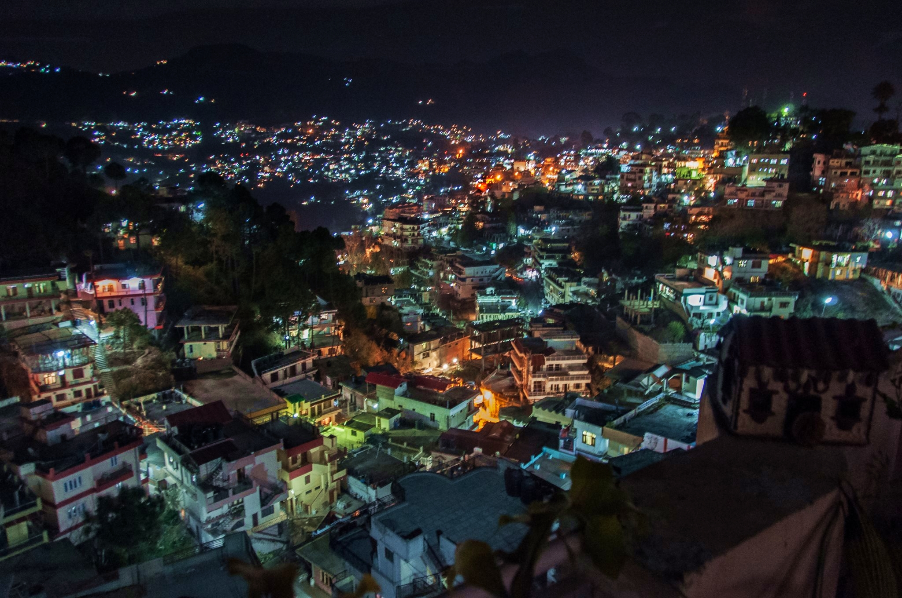
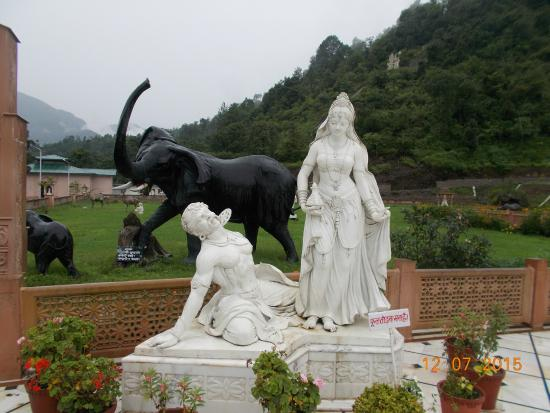
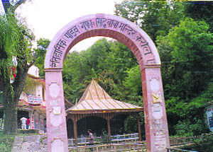
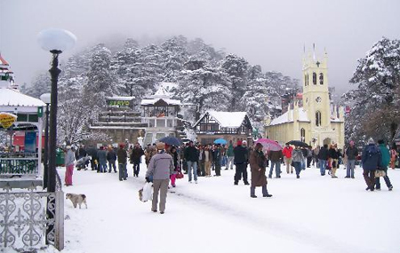
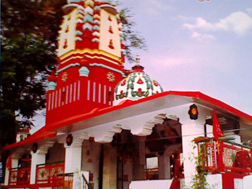
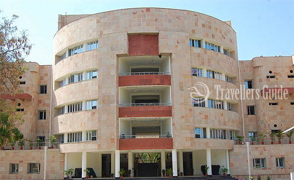

SOLAN:
Solan Known for its huge agricultural produces for Tomatoes and Mushrooms, Solan is often described as the Mushroom City of India and The City of Red Gold. The city is located at an average elevation of 1,600 meters above sea level and is the largest city in the state of Himachal Pradesh. Being a Gurkha capital of formerly known Princely state of Bhagat, the city is a cultural cauldron that contains a fine brew of culture, arts, religion and history. The city is full of a huge number of forts, monuments, temples, churches and various other places that can interest the tourists that visit Solan. Here is the list of the best places you must visit in Solan.

Famous Places Around Solan :
1. Mohan Shakti National Park:
Located on the foothills of the Himalayas, Mohan Shakti National Park is one of the most picturesque picnic spots you will visit in Himachal Pradesh. The Park is situated amidst thick oak trees and terraced gardens. Being situated on the foot hills, the park offers some amazing and breathtaking views of the surrounding mountains. The Park contains several temples and sculptures of various Hindu deities reminiscent of Akshardham temple in Delhi. Mohan Park is managed by the Mohan Meakin Brewries but one needs to be careful as the road leading to the park is steep and dangerous, so only if one can drive downhill, should one visit the place in the car. Also make sure you bring some eatables and drinking water.

2. Karol Tibba:
Karol Tibba along with the adjoining Meteol Tibba is one of the most famous attractions at Solan. The names refer to two peaks located in the Himalayas. The peaks are frequently visited picnic spots that can be accessed through a fairly easy trek trail via Chail and can only be viewed from Solan. Karol Tibba also houses places of immense historical and religious importance, a cave in the Himalayas that was believed to be inhibited by the Pandavas during their exile in the Mahabharatha.

3. The Mall Road:
The primary shopping area of Solan, the Mall road is the place you want to be if you want to experience the handicrafts, arts and various cuisines of Solan along with a plethora of shops and bazaars. Now, whenever talking about Mall in the north-eastern states in india, do not expect an actual Shopping Mall. The mall road is an Indian Style bazaar that contains various shops and showrooms of the top modern world product brands and bookstores. A day at the mall is a must, especially when you want to buy a souvenir or two to remember your visit.

4. Shoolini Mata Temple:
One of the prime attractions in Solan, The Shoolini Mata temple is dedicated to Shoolni Mata after whom the town was named. The temple is said to be built on the remains of an older temple the existence of which is presumed to precede the Town of Solan. It is frequented by a huge number of visitors daily and especially during the fair organized at the end of June that lasts for 3 days.

5. Motilal Nehru Central State Library:
The only central state library in Himachal Pradesh, the Motilal Nehru Central State Library is located at the Mall road in Solan. It was established in 1959 and is named after the famous Indian freedom fighter and the father of the first Prime Minister of India Jawaharlal Nehru.
Being the Capital of the Gurkha state, Solan is also known for its special cuisines which are exemplary of the culture and tradition of this region. The region is also known for its abundant natural resources and a wide verity of flora and fauna endemic to the Himalayan region. The above mentioned places are a must visit and should not be missed on your trip to Solan.
